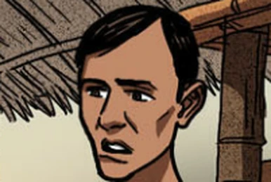

| Padre Damaso | He was the former town curate of San Diego.
He is the real father of Maria Clara. He was opposing Maria Clara's Marriage to Crisostomo Ibarra, and made efforts to drive them apart for his daughter's sake.
|
 | Kapitan Tiago | He was a dominant business man in San Diego.
He is the father of Maria Clara. He betrothed his daughter to Crisostomo Ibarra. He also struggled to obey the will of friars.
|
 | Don Rafael Ibarra | He is Crisostomo Ibarra's father.
He is the richest man in San Diego. He was virtuous and generous as well.
|
 | Crisostomo Ibarra | He is the son of Don Rafael Ibarra.
He is a student from San Diego. He became childhood friends with Maria Clara.
|
 | Maria Clara | She was raised as the daughter of Kapitan Tiago.
She became childhood friends with Crisostomo Ibarra. She was sent to study in Sta. Clara.
|
 | Padre Salvi | He was the town curate of San Diego.
He was the successor of Padre Damaso. He orchestrated the downfall of Crisostomo Ibarra, controlling the townspeople in process.
|
 | Padre Sibyla | He is a Dominican priest.
He was even a teacher of Ibarra, and helps Padre Damaso a lot too. He also wears gold glasses.
|
 | Tiya Isabel | She is the aunt of Maria Clara.
She is the cousin of Kapitan Tiago. She is the head housekeeper in the De Los Santos homestead.
|
 | Tenyente Guevarra | He is an elderly lieutenant of the Guardia Civil.
He is a close friend of Don Rafael Ibarra. He made some efforts to protect Crisostomo Ibarra after the latter came home from Europe.
|
 | Donya Pia Alba | She is the wife of Kapitan Tiago.
She is the mother of Maria Clara. She and her husband bought a land in San Diego, greatly expanding their business operations.
|
 | Don Anastacio/Pilosopo Tasio | He was an old scholar in San Diego.
He grew up becoming talented, then becoming a student of philosophy. He became an adviser for several individuals in the town.
|
 | Don Filipo Lino | He is the deputy mayor of San Diego.
He is also described as "almost liberal". He also represents the informal party of the younger, more open-minded generation.
|
 | Crispin | He is a young boy living in San Diego.
He is the son of Sisa. He is the younger brother of Basilio. He was accused of stealing from the church's coffers. After he was accused of stealing from the coffers, he was punished by the head sacristan and Padre Salvi.
|
 | Basilio | He is a young boy living in San Diego.
He is the son of Sisa He is the older brother of Crispin. He is soon going to Manila becoming a medical student.
|
 | Sisa | She is the mother of Basilio and Crispin.
She is a woman living in San Diego. Her husband is Pedro. When she noticed that her sons went missing, she wanders around town while searching for them.
|
|  | Pedro | He is the father of Basilio and Crispin.
He is the husband of Sisa. He has no job, and he likes to gamble a lot making his family's life hard.
|